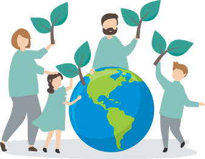
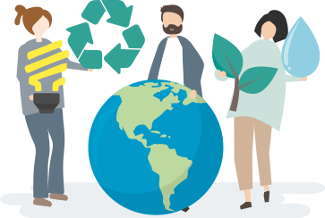
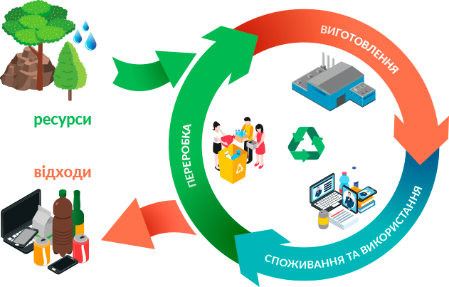

наш внесок у чисте та здорове майбутне

Зелений офіс – це турбота про наше з вами здоров’я та наш спільний внесок в охорону довкілля. Це ціла філософія розумного управління організацією, що дозволяє зменшити негативний вплив на довкілля шляхом максимального раціонального використанння та економії як ресурсів планети, так і фінансових ресурсів самої компанії. Лише декілька років назад ініціатива реалізації «зеленого» офісу була новою для вітчизняного ринку. Сьогодні все більше компаній готові похизуватися своїми досягненнями у сфері екологічного простору, метою яких є зниження навантаження на навколишнє середовище, бережне відношення до природних ресурсів, а також залучення співробітників до екологічного раціонального споживання. Ми дуже вдячні, що кількість колег lifecell у підтримці та активній ініціативності у змінах у компанії, участі у реалізації «зелених» ініціатив зростає кожного дня.

напрямки зеленого офісу

Розумне споживання товарів - важлива підтримка циркулярної економіки
